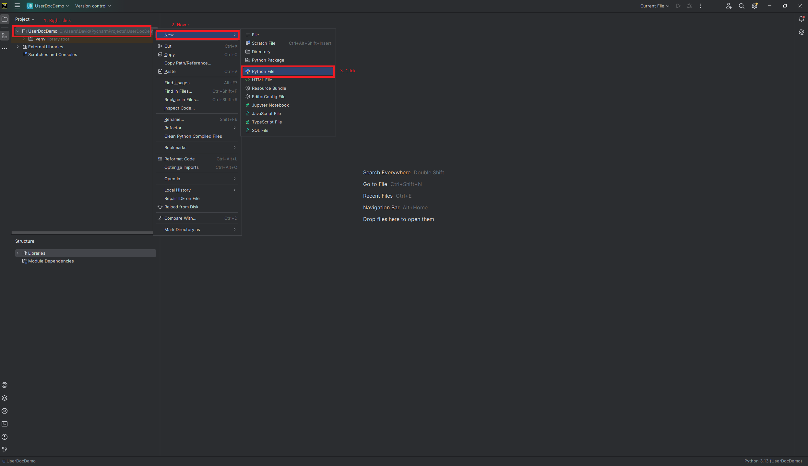

Your first program in PyCharm
'Fizz buzz' is a children's game used to teach division. You play it like this: starting from the number one, count up to one-hundred, saying each numbers out loud. Each time you get to a multiple of three, say "Fizz" instead of the number's name. Each time you get to a multiple of five, say "Buzz". And each time you get to a multiple of three and five, say "FizzBuzz". A game would look like this:
1, 2, Fizz, 4, Buzz, Fizz, 7, 8, Fizz, Buzz, 11, Fizz, 13, 14, Fizz Buzz, ...
And so on.
Writing a program which plays fizz buzz happens to be a well-known basic technical question for programming interviews. In this part of the guide, we'll introduce you to programming in Python by writing a program for fizz buzz.
Creating a Python File
Before you start programming, you need to create a Python file to write your code in. One project can have multiple Python files, each containing parts of a larger program. For this tutorial, you'll only need a single Python file.
To create a Python File, right-click on your project's name in the left sidebar, select 'New', then 'Python File'. We recommend naming the file 'FizzBuzz'.

Your new Python file should automatically open in the IDE.
Printing
In programming, 'printing' something usually means displaying it as text on the screen, rather than printing it with a printer.
When we want to print something in Python, we use the 'print()' function:
print("Hello, World!")
Loops
How do we print every number without listing?
Well, anytime we want do something repeatedly in a program there's a good chance we can use a loop.
Remove any code from your Python file, then copy and paste the following code and run it:
number = 0
while number < 101:
print(number)
number = number + 1
On the first line of code, we create a variable. A variable has a name and a value; in the first line of code we create a variable named 'number' and give it the value 0.
On the second line, we create a while loop. A while loop checks whether a condition is true or false. If the condition is true, the loop runs the indented code (lines 3 and 4), then checks if the condition again. It does this over and over until the condition is false, hence why its called a loop.
In this example, the loops condition is whether the variable 'number' is less than 101. We set number to 0 in the previous line, so this condition is true, and the loop starts.
Inside the loop we print number's value. Because we want to print number's value, we shouldn't put it in quotation marks like we did with "Hello, World!". You can test what happens when you write print("number") instead of print(number) to see why. Make sure to change it back after!
After printing number's value, we reassign (change) number's value. Specifically, we change its value to its value plus 1. In other words, we add 1 to number's value.
If-Else statements
Now, how do we replace numbers with 'Fizz' and 'Buzz'? Well, when we want to do something in some cases and something else in other cases, we can use an 'if-else' statement. Replace your code with the following:
number = 0
while number < 101:
if number == 3:
print("Fizz")
else:
print(number)
number = number + 1
The if-statement (third line) is kind of like a while loop: it checks if a condition is true or false, then runs some code if it's true. The difference is that the if statement does not loop. It checks once, runs the code or doesn't, then finishes.
On the fifth line, we have an else-statement. An else statement must come directly after an if statement. Instead of checking a condition, the else-statement runs when the if-statement above it didn't.
To simplify, the code we just added checks if the value of number is 3. If it is, we run the code in the if-statement, which prints "Fizz". If it is not, we run the code in the else-statement, which prints the value of number.
Complex conditions
Ok, but how do we print 'Fizz' on all multiples of 3, instead of just 3? By making the if-statement's condition more complex:
number = 0
while number < 101:
if number % 3 == 0: # This line changed
print("Fizz")
else:
print(number)
number = number + 1
The first thing to understand is the % symbol. In Python this is the modulo operator. The modulo operator gives us the remainder of dividing the number on the left by the number on right. Here it gives us the remainder of number's value divided by 3.
The condition then checks if the remainder is 0. When the remainder of a number x divided by a number y is 0, that means that x must be a multiple of y.
In other words, the if-statement is just checking if number is a multiple of 3.
The else-if statement
Now, lets make it print 'Buzz' for multiple of 5. Run the following code
number = 0
while number < 101:
if number % 3 == 0:
print("Fizz")
elif number % 5 == 0:
print("Buzz")
else:
print(number)
number = number + 1
Note that we were simplifying when we said that an else-statement must come after and if-statement. It can also come after an else-if statement (as in this code). An else-statement does the same thing regardless of whether the previous statement is an 'if' or an 'else-if': it runs if the previous statement did not.
Strings
Running the code, you might notice a problem: multiple of both 3 and 5 are replaced with 'Fizz', instead of 'FizzBuzz'. This is the last change, but it's also the most complex:
number = 0
while number < 101:
output = ""
if number % 3 == 0:
output += "Fizz"
if number % 5 == 0:
output += "Buzz"
if output == "":
output = number
print(output)
number = number + 1
Let's run through all the new ideas in this code.
Firstly, we create a new variable called output, and set its value to "". When we enclose a value in quotation marks, that means the value is a string. A string is a series of letters, numbers, or other symbols (like "Hello, World!", "Fizz", and "Buzz"). Because we haven't put anything between these quotation marks (not even a space!), output is an empty string; a string containing nothing.
Secondly, we've changed what our if-else statements do. Now, instead of printing anything, they change the value of our new variable output.
It might look like we're adding "Fizz" and "Buzz" to output, but that's not quite correct. Because output is a string, not a number, we cannot 'add' to it. With a string, the '+' symbol means 'concatenate'. In other words, 'attach this string to the end of that string'.
So output + "Fizz" attaches "Fizz" to the end of an empty string "". And output + "Buzz" will either add "Buzz" to the end of "Fizz" or an empty string, depending on whether the previous if-statement ran.
The third if-statement checks if output is empty. Because the two previous if-statements concatenate text to output, output will only be empty when the two previous if-statements did not run. And because the two previous if-statements run when number is a multiple of 3 or 5 respectively, then output will only be empty if numer is not a multiple of 3 or 5.
This means that our third if-statement only runs when number is not a multiple of 3 or 5. According to the rules of FizzBuzz, we should print the number itself. So we set output to the value of number.
Then, we simply print whatever the value of output is. Run it and see for yourself!
Conclusion
Congratulations, you've just written your first program in Python!
Now that you've done, why not try tinkering with the program? In an interview you might be asked to add new conditions to your program, like adding "Pop" if the number is divisible by 7. Working with code is the best way to learn code. Why not start now?